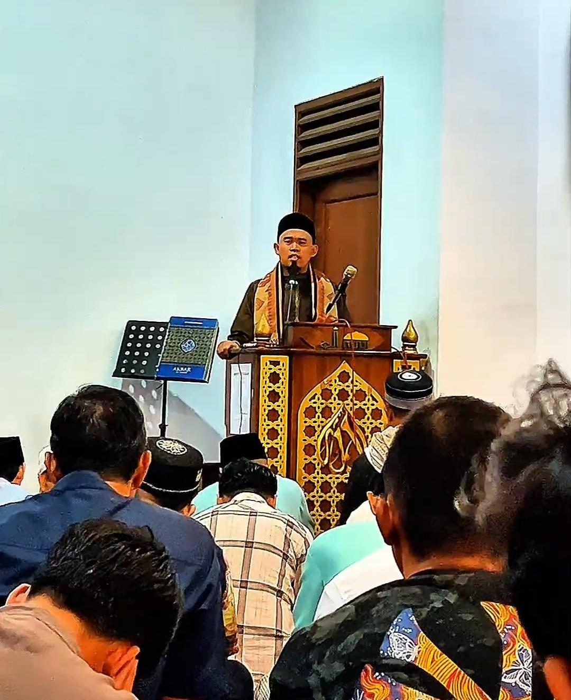
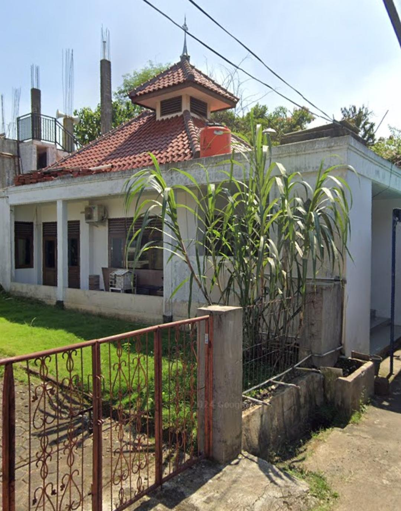

Anak Usia SD–SMP
Taman Pendidikan Al-Qur'an
Pusat keragaman, persatuan, dan layanan keislaman untuk jamaah serta masyarakat sekitar.
Beberapa layanan inti yang tersedia untuk jamaah dan warga sekitar.
Taman Pendidikan Al-Qur'an
Dana wakaf
Kapasitas kegiatan ibadah
Paguyuban kematian
Dokumentasi kegiatan, kajian, dan agenda penting Masjid An-Nuur.




Konten kajian, artikel islami, dan edukasi untuk semua kalangan.
Jadwal kajian subuh, ba'da maghrib, dan kegiatan pembinaan jamaah.
Pembelajaran Al-Qur'an, akhlak, dan kegiatan positif untuk generasi muda.
Dokumentasi kegiatan ibadah, pendidikan, dan sosial masjid.
Shalat berjamaah, kajian rutin, dan aktivitas pembinaan jamaah.
Ramadan, Idul Fitri, Idul Adha, dan kegiatan sosial kemasyarakatan.
Profil singkat Masjid An-Nuur Bumi Pertiwi Cilebut sebagai pusat ibadah, pendidikan, dan persatuan umat.
Menjadi masjid yang aktif, ramah, dan bermanfaat bagi jamaah serta masyarakat sekitar.
Menyelenggarakan layanan ibadah, dakwah, pendidikan, dan program sosial secara berkelanjutan.
Dukung program pembangunan dan kegiatan Masjid An-Nuur melalui donasi dan wakaf terbaik Anda.
Silakan tambahkan nomor rekening, QRIS, atau kontak bendahara pada bagian ini sebelum website dipublikasikan.